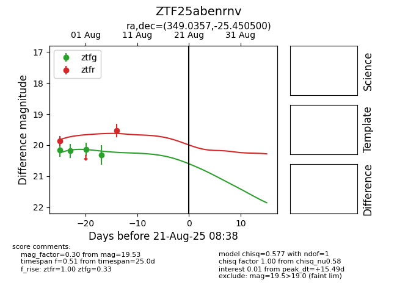

Target ZTF25abenrnv at 2025-08-21 08:38, see:
FINK: fink-portal.org/ZTF25abenrnv
Lasair: lasair-ztf.lsst.ac.uk/objects/ZTF25abenrnv
ALeRCE: alerce.online/object/ZTF25abenrnv
alt names
ZTF25abenrnv (ztf,alerce)
coordinates:
equatorial (ra, dec) = (349.0357,-25.45050)
galactic (l, b) = (32.0201,-68.60637)
photometry
last ztfg=20.31, ztfr=19.53
4 ztfg, 2 ztfr detections
